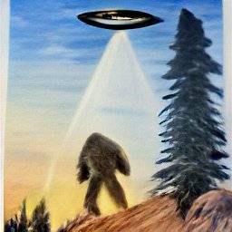

"The mystery of UFO/Bigfoot remains unsolved," which will be the salvation of the soul.

(image generated by Craiyon. https://www.craiyon.com)
Preface
- Butch Witkowski, who was once hospitalized for a heart attack and released from the hospital around last year to recuperate at home, died today. - While he was recovering, he continued to appear monthly on Dave Scott's network show in a special slot. It was only a few days ago that we featured a video of his appearance in the past article below. Butch Witkowski : Light appears over the accident site → Police, firefighters, and medical team on the scene all experience a mysterious stop (2021-12-01)Summary
- 11:00 This morning I received a phone call from Lon Strickler (who was close to Butch Witkowski) informing me of his passing. - He did not feel well last night, and when his wife asked if he was going to the hospital, he said he would see his doctor in the morning. But in the morning he did not wake up. - Dave Scott was in tears stating "We love you, Butch, and we will always miss you."
Auto-generated voice transcription
▼Click to expand
10:26 uh from what i know i had a long 10:28 conversation with 10:30 lon strickler 10:32 this morning shouldn't say long it 10:34 seemed long it was probably only about 10:36 five minutes 10:37 um butch wasn't feeling well last night 10:42 and 10:44 he woke up in the middle of the night 10:46 told his wife that he wasn't feeling 10:47 well 10:49 she asked if he wanted to go to the 10:51 hospital 10:52 he said no 10:54 he um 10:57 he would go in the morning to the clinic 10:58 to his specialty clinic 11:01 because he was always worried about his 11:02 heart since his heart attack 11:05 and 11:07 he didn't wake upVideo (35:54)
RIP BUTCH WITKOWSKI - OUR CRANKY CURMUDGEONattached memo
Rest In Peace, Butch Witkowski For more than six years, Butch Witkowski has been a pillar of excellence on Spaced Out Radio. His knowledge was second to none, and his jaded crankiness always perked up our listeners because when Butch was pissed off about something, he wasn't afraid to tell it like it is. I first interviewed Butch in 2015. I was intimidated by the tone of his voice and the straight forward candor he had regarding the cryptid, UFO, and paranormal phenomenon. On that first interview, he discussed human mutilations and the amount of people who go missing annually without a trace. It was an eye opener for me. Over time, I asked him to come on the show again. After that second interview about talking cryptids, I knew I had to make a monthly feature with him, which we would call 'Strange Days'. To my surprise, he enjoyed being on the show, and was more than open to be a part of the SOR family going forward. The final Monday of each month was set aside for Butch to talk about all of the cryptid stories he could. His love and passion for the subject was all consuming of him. He desperately wanted to see one of these infamous bi-pedal canines that people had been witnessing in the state parks of Pennsylvania, nicknamed the 'Lycan Loop'. In 2020, we nearly lost Butch to a massive heart attack, which led to major by-pass surgery. He needed a number of months off the show to rest and recuperate from the health scare. But he always told me he couldn't wait to get back with us on Spaced Out Radio because we were like family to him. When he returned to SOR, he sounded like a kid in the candy store, about to have the time of his life. Butch looked forward to coming on the air with us, every month. He always stated this was something he looked forward to. He loved Spaced Out Radio. He loved our listeners. He loved talking cryptids with anyone who'd listen. I found out from Lon Strickler and Bryan Bowden that we lost Butch this morning. He was 74. He passed away at his home, with his lovely wife by his side. Butch was one of the good ones. Honest as can be. Straight forward as can be. We can now only hope, he's got the answers to all the world's mysteries that he was trying to solve. We love you, Butch, and we will always miss you. Dave Scott - Host, Spaced Out RadioMy view 1
- Butch Witkowski, who appeared in the video in the past article posted above, must have been recuperating. At first I was surprised by his sudden aging, but I never expected him to pass away so suddenly... - I was also surprised at the news of his passing, as I had watched and listened to many of his Youtube videos since he was in good health.My view 2
- Most of the veteran civilian UFO/paranormal/occult researchers are old or approaching old age. Many of the civilian UFO/occult researchers whose interview videos and other materials have been introduced in this Blog have already passed away. It is inevitable that we will see and hear more news of their deaths in the future. - Like Butch Witkowski, they have spent most of their lives pursuing and unraveling the UFO/paranormal/occult. They ended their lives without having any clue as to the true nature of the mystery, or even the beginning of the solution. It is very regrettable for them, but on the other hand, it is also their "salvation" that the mystery remains a mystery. - Why salvation? For them, UFOs/paranormal/occult are, to put it bluntly, the salvation of their souls. Without realizing it, they are all bored and fed up with their daily lives in this tiny earthly world. They complain about this and that, but they are satisfied with their daily lives, and at the same time, they are in deep despair. - In the inescapable prison of the everyday world, the only hope they have left is the blue sky seen through a small window near the ceiling that has iron bars stuck in it. Religion can no longer be a salvation for these modern people. For them, UFOs, paranormal phenomena, and the occult are the blue sky seen through the bars. - These are, so to speak, modern alternatives to the religious images of salvation of the past. For them, the UFO/paranormal/occult is an astonishing world that transcends the everyday world, a truly meaningful world, a utopia that will one day descend from the heavens. This is why the UFO industry is infested with believers in the spiritual world. - UFO/ET/occult phenomena--that these mysteries remain mysteries...that is salvation. For believers who continue to await the imminent return of the Messiah, it is a blessing that he will not come. Because the Messiah does not exist, any Messiah who does come will be a fake and will inevitably be betrayed. - When I started this Blog eleven years ago, I never expected I would make following judgments: - "There is no survival of consciousness after death," - "The core of UFO/paranormal/occult is a product of Partial alteration of brain function (and resonance)," - "Everything humans aspire to is fiction. It is inevitable that the transcendent world and truth are fictions (*1)" For those who have made such judgments, salvation of the aforementioned kind are un wanted.（*1）
- Everything humans aspire to is fiction. It is inevitable that the transcendent world and truth are fictions... - In a previous article below, I stated that "the idea of truth is fiction" in response to the assertion that "it is true because it is fiction. 『虚構ゆえの真実』の「真実」の観念こそが虚構 （途中1） (2021-12-30) - But we can also put it more straightforwardly. It is precisely because it is "fiction" that it has been regarded as "truth" by human beings. In other words, truth because of fiction. (2022-01-13)
Thanks
Translated with www.DeepL.com/Translator (free version)
(2022-08-09 translate)
First published article (Japanese)
追悼：Butch Witkowski が（心臓疾患で）死去。享年 74 (2022-01-14)